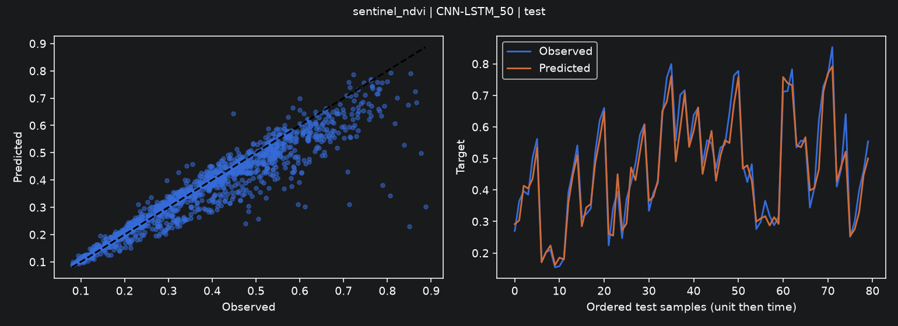
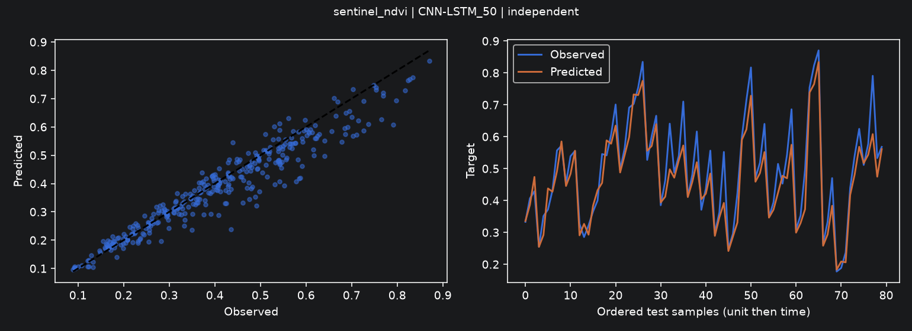
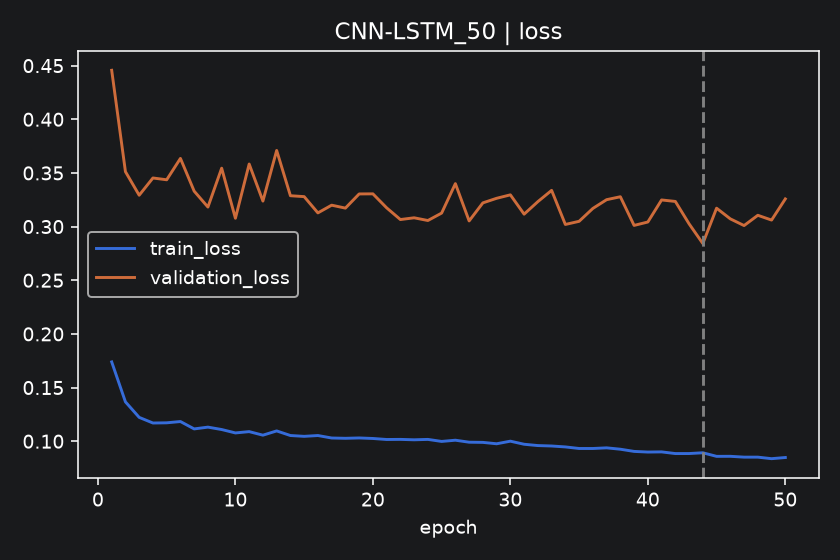

Chaque tâche est évaluée séparément. Les traitements d’irrigation ne sont pas des diagnostics de stress. Optimisation sur validation uniquement ; baseline incluse dans la sélection. Une seule graine, grille limitée : résultats exploratoires.
NDVI du mois suivant à partir de six mois observés consécutifs; horizon réel variable selon les acquisitions.
Modèle retenu par validation : CNN-LSTM_50.
Effectifs : {'independent': 338, 'test': 1340, 'train': 8507, 'validation': 1341}
| model | split | n | mae | rmse | r2 | fit_seconds | search_seconds | inference_ms_per_sample |
|---|---|---|---|---|---|---|---|---|
| Baseline | test | 1340 | 0.0521 | 0.0760 | 0.8072 | 0.0000 | 0.0000 | 0.0000 |
| Baseline | independent | 338 | 0.0531 | 0.0712 | 0.8304 | 0.0000 | 0.0000 | 0.0000 |
| RandomForest | test | 1340 | 0.0396 | 0.0640 | 0.8634 | 8.1837 | 14.5918 | 0.0264 |
| RandomForest | independent | 338 | 0.0408 | 0.0575 | 0.8895 | 8.1837 | 14.5918 | 0.0264 |
| XGBoost | test | 1340 | 0.0406 | 0.0638 | 0.8639 | 0.2471 | 2.0764 | 0.0011 |
| XGBoost | independent | 338 | 0.0422 | 0.0585 | 0.8855 | 0.2471 | 2.0764 | 0.0011 |
| LightGBM | test | 1340 | 0.0406 | 0.0640 | 0.8632 | 0.1082 | 0.6000 | 0.0028 |
| LightGBM | independent | 338 | 0.0423 | 0.0589 | 0.8840 | 0.1082 | 0.6000 | 0.0028 |
| LSTM_50 | test | 1340 | 0.0363 | 0.0603 | 0.8788 | 8.5791 | 24.8267 | 0.0021 |
| LSTM_50 | independent | 338 | 0.0360 | 0.0512 | 0.9122 | 8.5791 | 24.8267 | 0.0021 |
| LSTM_100 | test | 1340 | 0.0363 | 0.0603 | 0.8788 | 7.7811 | 15.8363 | 0.0022 |
| LSTM_100 | independent | 338 | 0.0360 | 0.0512 | 0.9122 | 7.7811 | 15.8363 | 0.0022 |
| LSTM_150 | test | 1340 | 0.0363 | 0.0603 | 0.8788 | 12.9959 | 25.7654 | 0.0022 |
| LSTM_150 | independent | 338 | 0.0360 | 0.0512 | 0.9122 | 12.9959 | 25.7654 | 0.0022 |
| GRU_50 | test | 1340 | 0.0360 | 0.0591 | 0.8833 | 10.9330 | 22.6558 | 0.0023 |
| GRU_50 | independent | 338 | 0.0366 | 0.0518 | 0.9102 | 10.9330 | 22.6558 | 0.0023 |
| GRU_100 | test | 1340 | 0.0360 | 0.0591 | 0.8833 | 5.4757 | 27.0155 | 0.0020 |
| GRU_100 | independent | 338 | 0.0366 | 0.0518 | 0.9102 | 5.4757 | 27.0155 | 0.0020 |
| GRU_150 | test | 1340 | 0.0360 | 0.0591 | 0.8833 | 5.4665 | 25.2649 | 0.0021 |
| GRU_150 | independent | 338 | 0.0366 | 0.0518 | 0.9102 | 5.4665 | 25.2649 | 0.0021 |
| CNN-LSTM_50 | test | 1340 | 0.0380 | 0.0634 | 0.8658 | 16.6036 | 26.0520 | 0.0024 |
| CNN-LSTM_50 | independent | 338 | 0.0372 | 0.0535 | 0.9044 | 16.6036 | 26.0520 | 0.0024 |
| CNN-LSTM_100 | test | 1340 | 0.0380 | 0.0634 | 0.8658 | 18.0854 | 27.6214 | 0.0024 |
| CNN-LSTM_100 | independent | 338 | 0.0372 | 0.0535 | 0.9044 | 18.0854 | 27.6214 | 0.0024 |
| CNN-LSTM_150 | test | 1340 | 0.0380 | 0.0634 | 0.8658 | 13.3771 | 28.2978 | 0.0026 |
| CNN-LSTM_150 | independent | 338 | 0.0372 | 0.0535 | 0.9044 | 13.3771 | 28.2978 | 0.0026 |
| model | train_rmse | validation_rmse | validation_minus_train |
|---|---|---|---|
| Baseline | 0.0625 | 0.0835 | 0.0210 |
| RandomForest | 0.0382 | 0.0860 | 0.0478 |
| XGBoost | 0.0491 | 0.0886 | 0.0395 |
| LightGBM | 0.0489 | 0.0888 | 0.0398 |
| LSTM_50 | 0.0476 | 0.0830 | 0.0354 |
| LSTM_100 | 0.0476 | 0.0830 | 0.0354 |
| LSTM_150 | 0.0476 | 0.0830 | 0.0354 |
| GRU_50 | 0.0504 | 0.0838 | 0.0334 |
| GRU_100 | 0.0504 | 0.0838 | 0.0334 |
| GRU_150 | 0.0504 | 0.0838 | 0.0334 |
| CNN-LSTM_50 | 0.0461 | 0.0823 | 0.0362 |
| CNN-LSTM_100 | 0.0461 | 0.0823 | 0.0362 |
| CNN-LSTM_150 | 0.0461 | 0.0823 | 0.0362 |
Écart train-validation descriptif : il peut refléter surapprentissage et changement de distribution. Les pertes DL sont calculées en mode évaluation ; la régression est standardisée sur train.



Sources : https://doi.org/10.6084/m9.figshare.28486022.v2
Le modèle est sélectionné uniquement par RMSE de validation, baseline comprise. Comparer ensuite son gain sur le test temporel et les groupes spatiaux réservés. Un seul seed et une petite grille ne démontrent pas une supériorité statistique. Le NDVI ne constitue pas une vérité terrain de stress hydrique.